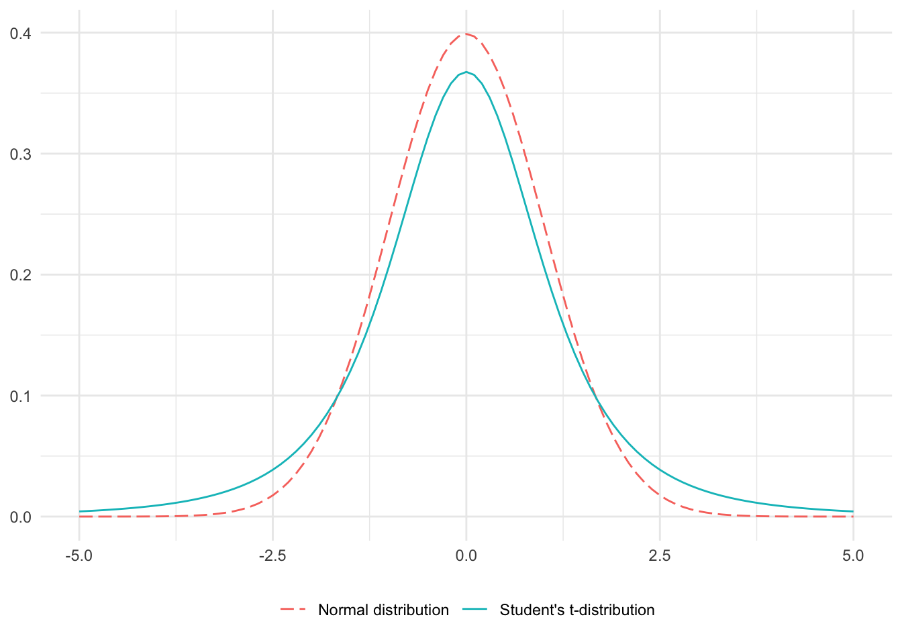

t-SNE
Reducing the mysterious technique to its basic dimensions

In the world of working with data, sometimes we come across a dataset that makes us feel like we’re going to lose our $#%+!
This can happen for a number of reasons, but sometimes it’s because our data has a ton of variables - whether it’s a dataset with 15 variables to predict whether or not a bank customer will churn, or an image dataset where each variable corresponds to one of the hundreds of pixels in each image. Data like this, with many many variables, is what we call high-dimensional data. A big challenge with high dimensional data is figuring out how to visualize it, since we can only see in \(\leq 3\) dimensions, but our data can be n-dimensional.
This is where dimension reduction methods come in. Dimension reduction methods are ways to mathematically transform our data into something with fewer variables (dimensions), while still preserving the meaning in the data. Most dimension reduction methods are themselves unsupervised machine learning methods, but they’re often used as preprocessing steps for other ML applications. You may have heard of PCA, which is a dimension reduction method that takes linear combinations of the variables in a dataset to reduce it to fewer dimensions, highlighting the main channels of variation in the data. PCA is a great tool, but it’s a linear dimension reduction method, which means it has trouble capturing nonlinear, complex relationships. For that, we need t-SNE.
The Big Picture
t-SNE is an unsupervised, nonlinear dimension reduction method that allows us to visualize the structure of high dimensional data on a 2D graph. With t-SNE, the idea is to turn a high dimensional dataset into a matrix of pairwise similarities that can then be “mapped” onto a scatterplot, where the proximity between points on that plot reflect the similarity of the corresponding datapoints from the high dimensional dataset. To put that very simply, t-SNE takes similar points from a big dataset and puts them near each other on a scatterplot, forming clusters. This helps us get a feel for how the points are arranged in the high dimensional data space.
The “t” in “t-SNE” refers to the Student’s t-distribution,1 which is like a normal distribution, but with fatter tails:
And the “SNE” stands for Stochastic Neighbor Embedding, which is the dimension reduction method that t-SNE stems from.
The Mechanics
The math behind t-SNE can get very high level. Instead of providing a rigorous mathematical explanation, I think we would all be better off if I describe the mathematical mechanics behind what’s going on. Here’s a little bit about how t-SNE works under the hood:
Suppose we have a dataset \(X\) that contains points \(x\) in \(\mathbb{R}^n\).
For each point \(x\), we want to find a low dimensional point \(y\) in \(\mathbb{R}^k\) (where \(k<<n\), usually \(k = 2\) or \(3\)) that maps \(x_i \mapsto y_i\) such that the similarity of \(x_i\) and \(x_j\) is somehow reflected in the proximity of \(y_i\) and \(y_j\).
So now we need to define “similarity of \(x_i\) and \(x_j\)” and “proximity of \(y_i\) and \(y_j\)”:
1. Similarity
The similarity of \(x_i\) and \(x_j\) is given by the conditional probability, \[p_{j|i} = \frac{\exp(-||x_i - x_j||^2 / 2\sigma_i^2)}{\sum_{k\neq i} \exp(-||x_i - x_k||^2 / 2\sigma_i^2)}\]
Looking at the numerator, \(-||x_i - x_j||^2\) is the negative (Euclidean) distance between the two points squared. That’s not so bad! Then we divide that by \(2\sigma_i^2\) which is a tunable parameter called “perplexity”. Perplexity can’t really be chosen empirically, so we play around with values (usually between 5 and 50) to find what gives us the best results. Lastly, we exponentiate this, which means the value of the numerator will be nearer to zero the further apart the points are, and nearer to one the closer the points are. The denominator basically just normalizes so all the probabilities for a given \(x_i\) sum to one.
The main takeaway here is that if points are near each other in the original high dimensional data, \(p_{j|i}\) will be high, and if they are far apart, \(p_{j|i}\) will be low. \(p_{j|i}\) gives the probability that point \(x_i\) would pick point \(x_j\) as its neighbor if it was choosing based on a normal (Gaussian) probability density with itself (\(x_i\)) as the center.
2. Proximity
The proximity of \(y_i\) and \(y_j\) is given by the joint probability, \[q_{ij} = \frac{\exp(1 + ||y_i - y_j||^2)^{-1}}{\sum_{k\neq l} \exp(1 + ||x_i - x_k||^2)^{-1}}\]
This is a similar equation to the previous one, but it uses a Student’s t-distribution instead of a normal (Gaussian) distribution. \(q_{ij}\) gives the probability that point \(y_i\) would pick point \(y_j\) as its neighbor if it was choosing based on a Student’s t-distribution centered at \(y_i\).
3. Putting it all together
To reiterate, the main goal of t-SNE is to find a low dimensional representation of high dimensional data where the proximity between points in the low dimensional space (graph) reflect the similarity of the corresponding points in the high dimensional space (dataset). Translating this into the math we just covered, we want to choose \(y\) such that \(q\) looks like \(p\). To do this, we minimize Kullback-Liebler divergence, which is basically the average log likelihood ratio between \(p\) and \(q\).
In a nutshell: given data points \(x_i \in \mathbb{R}^n\), find locations \(y_i \in \mathbb{R}^k\) to minimize the average log likelihood ratio between \(p_{j|i}\) and \(q_{ij}\).
The Example
You made it through the mechanics, and now it’s time for the satisfying part: the visualizations.
I’m going to use the iris dataset, which is built in to R. It contains data on sepal length/width and petal length/width for 3 different species of iris flowers. This dataset is quite simple, which means it doesn’t produce the most mind blowing dimensionality reduction visualizations out there, but the fact that it comes pre-loaded into R and isn’t very long means anyone with R can replicate this example with a very short run time.
Let’s do some t-SNE:
There are a couple packages that can be used to perform t-SNE in R, but the most popular seems to be the aptly named Rtsne.
library(Rtsne)The Rtsne package has an identically named function that we will use to perform t-SNE. The function wants to be supplied numeric data in matrix format that doesn’t contain any duplicate rows. It is also recommended to normalize - such as with the scale()2 function - this matrix before passing it into Rtsne(). Let’s go through this preprocessing:
# first remove duplicates
iris_unique <- unique(iris)
# then pull species data (for plotting later)
species <- iris_unique$Species
# then form matrix for t-SNE
iris_matrix <- iris_unique %>%
select(-Species) %>% # remove character column (numeric data ONLY)
as.matrix() %>% # matrix format
scale() # normalizeNow we are ready to run t-SNE. We will supply Rtsne() the matrix above, and set some parameters. There are many parameters, but generally the most essential ones are:
dims: the number of output dimensions. 2 for a 2D scatterplot, 3 for a 3D graph.perplexity: the aforementioned perplexity parameter, which says (loosely) how to balance attention between local and global aspects of the data. Play around with values between 5-50, but as a rule: 3 * perplexity < nrow(X) - 1 .max_iter: the number of iterations. The default is 1000, but some datasets will need more iterations to converge to a stable representation. Increase until the configuration looks stable, or set to 5000 to be safe (note that this will take longer to run).
Running t-SNE on our preprocessed iris matrix:
set.seed(101506) # it's important to set a seed! t-SNE viz can change iter to iter
# running t-SNE
tsne_output <- Rtsne(iris_matrix,
dims = 2,
perplexity = 15,
max_iter = 5000)
# turning outputted values into a df, along with the species data we set aside
tsne_df <- data.frame(tsne_output$Y,
species = species)
# plotting
ggplot(tsne_df, aes(x = X1, # first dim outputted
y = X2, # second dim outputted
color = species)) + # color by species to see clustering
geom_point() +
scale_color_viridis_d(option = "plasma") +
labs(title = "t-SNE") +
theme_minimal()
As we can see, t-SNE pretty successfully separated the data into clusters by species! You might be seeing the slight overlap between the classification of the Versicolor and Virginica iris species, so let me show you why that might be:

Those two iris species look VERY similar, especially compared to the Setosa species! So all things considered, t-SNE performed quite well.
Lastly, I want to dig into the mysterious perplexity parameter a little. I think the best way to understand how perplexity affects the projection of the high-dim data onto the low-dim representation is to see it in real time. Here is an animation I made with gganimate that loops the same t-SNE process as before, but using different perplexity values each time:
library(gganimate)
# set perplexity values to loop through
perplexities <- c(5, 10, 15, 20, 25, 30, 35, 40, 45)
# same exact process as before, but using lapply() to loop through perplexity values
tsne_df <- lapply(perplexities, function(p) {
set.seed(101506)
tsne_output <- Rtsne(iris_matrix,
dims = 2,
perplexity = p,
max_iter = 5000)
data.frame(tsne_output$Y,
perplexity = p,
species = species)
}) %>% bind_rows()
ggplot(tsne_df, aes(x = X1,
y = X2,
color = species)) +
geom_point() +
scale_color_viridis_d(option = "plasma") +
labs(title = "ta-da!",
subtitle = "perplexity: {closest_state}") +
transition_states(perplexity) + # from gganimate
theme_minimal()
As you can see, perplexity can change the representation quite a bit, so it’s important to play around with different values and to take that variation into consideration when interpreting t-SNE. For more information on interpreting t-SNE plots, this article from Distill is an excellent resource.
Wrapping up
In sum, t-SNE is an unsupervised nonlinear dimension reduction method that lets us lay out large datasets in 2D maps. From these maps, we can see the structure of the data, like we did when we saw the separation of datapoints by species in the iris dataset. While the concept of t-SNE can be hard to grasp at first - and the math can be even harder - implementing t-SNE in R is pretty straightforward with help from the Rtsne package. t-SNE is an exciting way to reduce complex data into basic (yet informative) dimensions, and I hope you were able to learn something from this basic introduction into the complex world of t-SNE!